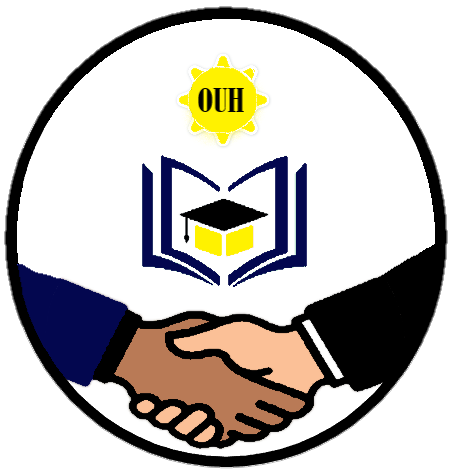
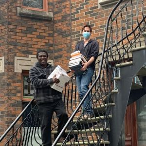

Bienvenue sur le site officiel de l'Organisation de l'Union Haïtienne
Ensemble, cultivons le savoir, préservons la santé, façonnons l'avenir.
Organisation de l'Union Haïtienne
L'Organisation de l'Union Haïtienne (OUH) se positionne comme un acteur humanitaire clé en Haïti, fondé en 1995 par M. Emmanuel Herly Petit. Son engagement indéfectible se concentre sur deux piliers fondamentaux : l'éducation et la santé. En tant qu'organisme à but non lucratif, légalement enregistré selon les lois haïtiennes et québécoises, l'OUH s'est donné pour mission de répondre aux besoins essentiels des populations défavorisées.
En partenariat avec l'État haïtien, l'organisation gère des centres de santé, réouvre des dispensaires inactifs depuis des années, et s'engage dans des programmes éducatifs, favorisant notamment la création d'emplois dans le secteur de la santé. La coopération internationale constitue également un aspect essentiel de son action, mobilisant l'expertise des professionnels de la santé du Canada et du Québec. L'OUH joue un rôle prépondérant dans la réponse humanitaire, réagissant aux catastrophes naturelles, tout en mettant en œuvre des initiatives préventives pour renforcer la santé des communautés haïtiennes.
Synthèse des Projets de l'Organisation
L'Organisation de l'Union Haïtienne (OUH) se distingue en tant qu'organisme humanitaire à but non lucratif, œuvrant depuis sa fondation en 1995 sous la direction de M. Emmanuel Herly Petit. Axée sur le développement durable des structures de santé communautaire en Haïti, l'OUH a entrepris divers projets concrets pour répondre aux besoins fondamentaux de soins de santé primaires et de développement local. Parmi ses initiatives marquantes figure la construction et gestion d'un hôpital de niveau II à Cabaret-Arcahaie, la revitalisation de centres de santé défaillants en partenariat avec l'État haïtien, la création d'un laboratoire spécialisé en maladies parasitaires tropicales, et le déploiement d'une clinique mobile pour des soins de santé et des campagnes de vaccination.
Faites un Don
Contribuez à nos initiatives pour un impact positif en Haïti. L'Organisation de l'Union Haïtienne s'engage passionnément à améliorer la vie des communautés les plus vulnérables de ce magnifique pays. Chaque don que vous faites devient une pierre angulaire pour construire un avenir meilleur. Ensemble, nous pouvons allumer la lueur de l'espoir dans les cœurs qui en ont le plus besoin. Votre générosité soutiendra des projets éducatifs, des programmes de santé vitaux et des efforts de développement durable. Chaque contribution, grande ou petite, est une force puissante pour le changement. Faites partie de cette transformation et investissez dans la construction d'un avenir plus fort et plus équitable pour Haïti. Votre don n'est pas simplement financier, c'est une déclaration d'amour en action, démontrant que chaque vie compte et mérite d'être élevée. Rejoignez-nous dans cette mission de compassion et d'édification communautaire. Ensemble, nous pouvons réaliser des miracles.
Témoignages
Références et Partenaires
Dans notre quête constante pour renforcer notre impact positif en Haïti, l'Organisation de l'Union Haïtienne (OUH) collabore étroitement avec des partenaires clés. Ces alliances stratégiques, concentrées exclusivement sur notre mission, comprennent des références et des partenaires institutionnels. Nous sommes honorés de travailler en étroite collaboration avec des entités telles que le Ministère des Affaires Étrangères d'Haïti. Par ailleurs, notre engagement ne s'arrête pas là. Pour en savoir plus sur ces partenariats cruciaux et les références qui attestent de notre dévouement envers le progrès haïtien, nous vous invitons à visiter la page dédiée aux 'Références et Partenaires'. C'est là que vous découvrirez en détail les connexions qui renforcent notre capacité à œuvrer pour une Haïti florissante et unifiée.